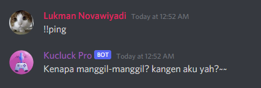

Untuk menggunakan Kucluck bot, kalian bisa menggunakan prefix + command yang di perlukan. Untuk Prefix default Kucluck Standard dan Kucluck Pro sendiri itu berbeda. Prefix Kucluck Bot: [!] Kucluck Standard [!!] Kucluck Pro 
[!]
[!!]
Memberikan informasi tentang semua command Kucluck Bot.Aliases: "command", "commands", "cmd", "bantuan", "tolong". Usage: [] Contoh: !help
"command"
"commands"
"cmd"
"bantuan"
"tolong"
[]
!help
Memberikan informasi tentang semua command Kucluck Bot. Aliases: "command", "commands", "cmd", Usage: [commands]Contoh: !help play
[commands]
!help play
Memberikan informasi tentang bot status.Aliases: "about", "stats", "info".Usage: []Contoh: !ping
"about"
"stats"
"info"
!ping
Memberikan informasi Kucluck Pro.Aliases: "pro", "premi", "vip".Usage: []Contoh: !premium
"pro"
"premi"
"vip"
!premium
Menghapus semua lagu dari playlist.Aliases: "cl", "cls", "hapus".Usage: []Contoh: !clear
"cl"
"cls"
"hapus"
!clear
Memanggil Kucluck Bot ke voice channel.Aliases: "connect", "masuk".Usage: []Contoh: !join
"connect"
"masuk"
!join
Memberhentikan musik yang dimainkan bot dan keluar dari voice channel.Aliases: "disconnect", "exit", "quit", "dc", "stop", "pergih", "cabut".Usage: []Contoh: !leave
"disconnect"
"exit"
"quit"
"dc"
"stop"
"pergih"
"cabut"
!leave
Mengulang lagu yang sedang dimainkan.Aliases: "l", "repeat", "ulang", "loop", "ls".Usage: []Contoh: !loopsong
"l"
"repeat"
"ulang"
"loop"
"ls"
!loopsong
Memindahkan lagu di playlist ke antrian yang anda mau.Aliases: "m", "pindahin", "pindahkan", "pindah".Usage: [Number]Contoh: !move 1
"m"
"pindahin"
"pindahkan"
"pindah"
[Number]
!move 1
Melihat lagu yang sedang di mainkan.Aliases: "np", "nowplaying", "now playing".Usage: []Contoh: !nowplaying
"np"
"nowplaying"
"now playing"
!nowplaying
Memberhentikan musik yang sedang dimainkan untuk sementara waktu.Aliases: "jeda".Usage: []Contoh: !pause
"jeda"
!pause
Memainkan lagu yang kamu suka.Aliases: "p", "musik", "lagu".Usage: [Judul Lagu]Contoh: !play lagu santai
"p"
"musik"
"lagu"
[Judul Lagu]
!play lagu santai
Memainkan lagu yang kamu suka.Aliases: "p", "musik", "lagu".Usage: [URL Lagu]Contoh: !play https://www.youtube.com/watch?v=M1yJQyqv1Po
[URL Lagu]
!play https://www.youtube.com/watch?v=M1yJQyqv1Po
Melihat semua lagu di dalam playlist.Aliases: "q", "pl", "antrian", "queue".Usage: []Contoh: !playlist
"q"
"pl"
"antrian"
"queue"
!playlist
Membuang salah satu lagu yang yang ada di playlist.Aliases: "rm", "delete", "hapus".Usage: [Number]Contoh: !remove 4
"rm"
"delete"
!remove 4
Melanjutkan musik yang di jeda.Aliases: "lanjutkan", "lanjutin".Usage: []Contoh: !resume
"lanjutkan"
"lanjutin"
!resume
Menampilkan hasil lagu berdasarkan kata kunci pencarian.Aliases: "se", "cari".Usage: [Judul Lagu]Contoh: !search
"se"
"cari"
!search
Mempercepat durasi lagu ke waktu yang di inginkan.Aliases: "forward", "jump", "lewati", "mencari".Usage: [number + s, m, h]Contoh: !seek 20s
"forward"
"jump"
"lewati"
"mencari"
[number + s, m, h]
!seek 20s
Mengacak urutan lagu yang ada playlist.Aliases: "shuff", "acakpl", "mix".Usage: []Contoh: !shuffle
"shuff"
"acakpl"
"mix"
!shuffle
Melewatkan lagu yang sedang dimainkan.Aliases: "s", "next".Usage: []Contoh: !skip
"s"
"next"
!skip
Mengatur volume bass.Aliases: "bb", "bass".Usage: [none, low, medium, high]Contoh: !bassboost medium
"bb"
"bass"
[none, low, medium, high]
!bassboost medium
Memindahkan track ke antrian paling depan.Aliases: "b", "up".Usage: []Contoh: !bump
"b"
"up"
!bump
Memainkan lagu yang dipilih dari playlist.Aliases: "st".Usage: [number]Contoh: !skipto 12
"st"
[number]
!skipto 12
Menyimpan URL lagu yang dimainkan saat ini ke DM kamu.Aliases: "save", "grab".Usage: []Contoh: !savesong
"save"
"grab"
!savesong
Mengulang lagu yang ada diplaylist.Aliases: "lq", "repeatqueue", "rq", "lp".Usage: []Contoh: !loopqueue
"lq"
"repeatqueue"
"rq", "lp"
!loopqueue
Menampilkan lirik lagu.Aliases: "ly", "liriklagu", "lirik".Usage: [Judul Lagu]Contoh: !lyrics
"ly"
"liriklagu"
"lirik"
!lyrics
Periksa atau ubah volume saat ini.Aliases: "vol", "v".Usage: [Number 0-100]Contoh: !volume 80
"vol"
"v"
[Number 0-100]
!volume 80
Menampilkan avatar.Aliases: "ava", "foto", "photo".Usage: []Contoh: !avatar
"ava"
"foto"
"photo"
!avatar
Menampilkan avatar member Discord channel yang dipilih.Aliases: "ava", "foto", "photo".Usage: [user tag]Contoh: !avatar @member
[user tag]
!avatar @member
Memulai sesi nonton bareng di Youtube.Aliases: "yt", "nobar".Usage: []Contoh: !youtube
"yt"
"nobar"
!youtube
Mengatur prefix dan mengatur DJ Role.Aliases: "conf".Usage: []Contoh: !config
"conf"
!config